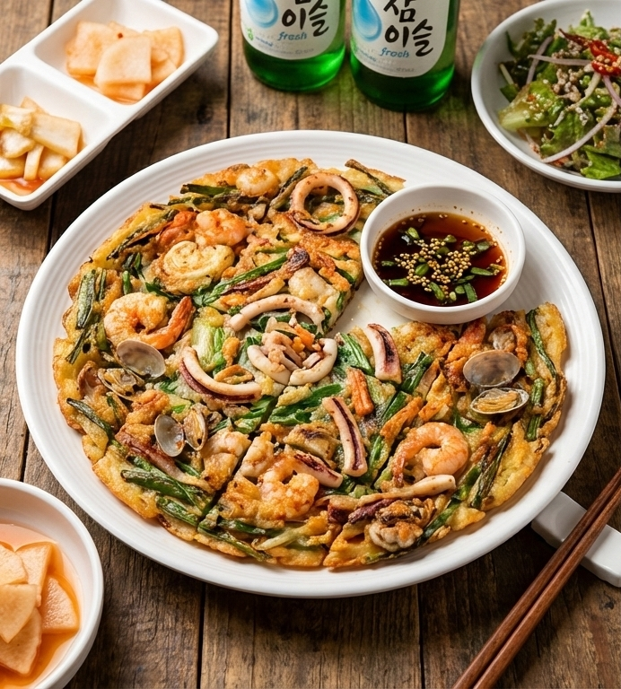
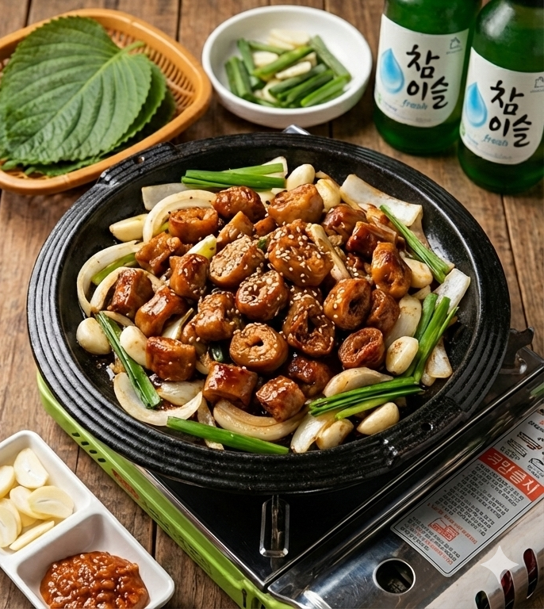
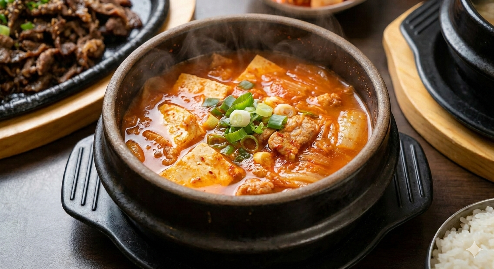
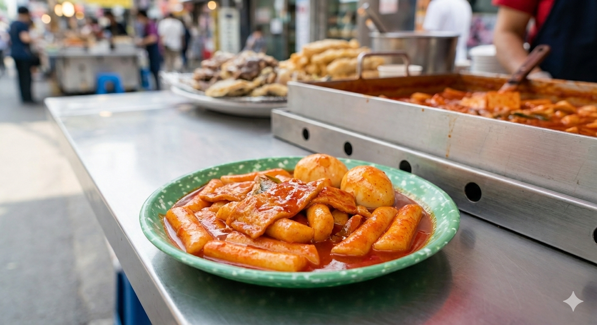

91234102 鄭浩均 餐飲三甲
浩均的美食日記
海鮮煎餅
外皮酥脆、內餡豐富，是非常經典的韓式料理之一， 常在下雨天搭配米酒一起享用。
查看更多海鮮煎餅介紹韓式肥腸
肥腸經過處理與調味後再進行燒烤， 口感Q彈，是許多人喜愛的料理。
查看更多肥腸介紹韓式烤肉

將醃製好的肉片放在烤盤上燒烤， 搭配生菜與泡菜一起食用非常美味。
查看更多韓式烤肉介紹泡菜鍋
以發酵泡菜作為湯底，酸辣開胃， 非常適合在冷天氣享用。
查看更多泡菜鍋介紹韓式年糕
Q彈的年糕搭配甜辣醬汁， 是韓國街頭最受歡迎的小吃之一。
查看更多韓式年糕介紹學習心得
這堂課非常有趣，讓我學會如何使用 HTML 製作網站， 也認識到 AI 在學習與製作網頁上的多種應用方式， 對我幫助非常大。
閱讀學習心得